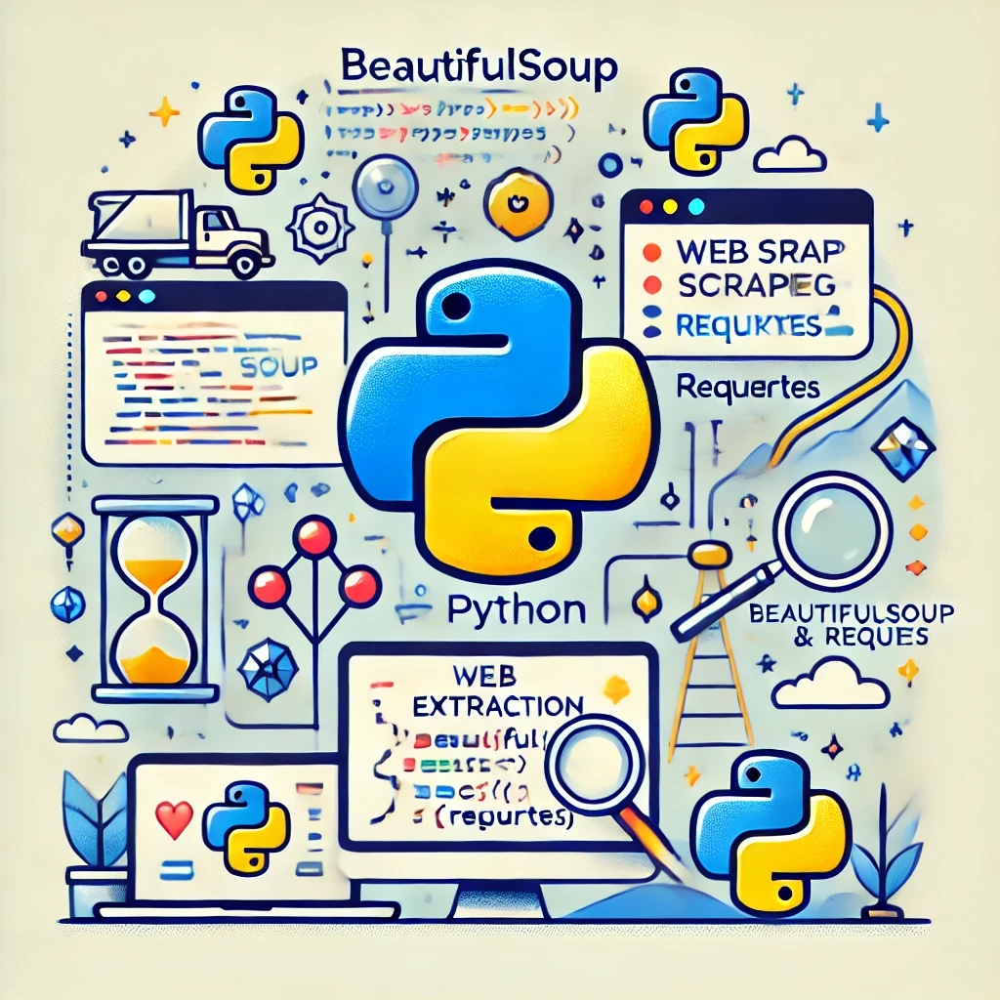

This project focuses on cleaning and transforming raw data using SQL to ensure accuracy,
consistency, and usability for analysis and reporting. The goal is to demonstrate proficiency in
SQL data cleaning techniques and best practices.

The objective of this project is to analyze COVID-19 data using SQL queries to extract meaningful
insights, track trends, and support data-driven decision-making. The project focuses on
understanding key aspects such as infection rates, mortality rates, vaccination progress, and
regional impacts.

This project aims to analyze and visualize COVID-19 data using Tableau to uncover key trends and
insights related to the pandemic. The focus is on creating interactive dashboards that provide a
comprehensive view of infection trends, mortality rates, and vaccination progress across
different regions.

This project involves a comprehensive analysis of Netflix's movies and TV shows data using SQL.
The goal is to extract valuable insights and answer various business questions based on the
dataset.

This project demonstrates the use of Python for web scraping, utilizing the BeautifulSoup and
requests libraries to extract valuable data from web pages. The script fetches webpage content,
parses the HTML structure, and extracts relevant information efficiently.

This project is centered around analyzing movie-related data to derive insights into trends,
patterns, and relationships within the film industry. The analysis may involve exploring
datasets containing information such as movie titles, genres, ratings, box office collections,
and other metrics.

The project focuses on analyzing retail sales data to derive meaningful insights that can guide
business decision-making. By leveraging structured data stored in a database, the project aims
to identify patterns, trends, and anomalies in retail sales performance.